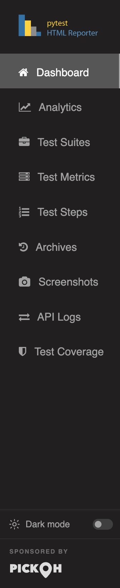

pytest-html-reporter is a pytest plugin, so it installs like any other package and needs no
wiring. setup.py asks for Python 3.5 or newer and pulls in two dependencies:
pytest itself, with no version ceiling on it, and Pillow, which the
plugin uses to handle the screenshots it captures.
There is no import to add and no configuration file to write. The package registers itself
through pytest's pytest11 entry point, which means the next pytest you
run already has the reporter attached to it.
From PyPI, into whatever environment your tests already run in.
$ pip3 install pytest-html-reporterExactly the command you ran yesterday. No flag is required for a report to be written.
$ pytest tests/ --html-report=./reportThe report opens in your browser on its own when the run finishes, because you are sat there watching the run. Nothing needs to be passed to get that, and nothing opens on a build agent. If you would rather open it yourself, it is a plain file on disk: double-click it, mail it, or publish it as a CI artifact. It carries its own CSS and JavaScript, so it needs no server and no network to render.
With no flags at all, the plugin writes two files into your project's home directory — the
directory you started pytest from:
pytest_html_report.html — the report.output.json — the machine-readable record of this build. The
Archives and Analytics tabs are built by reading these back, so it is
not a by-product you can delete.Give --html-report a folder and both files move into it, which is what most
people do on the first run so that the report is not sitting in the repository root:
$ pytest tests/ --html-report=./reportAfter a second run the folder looks like this. Each previous build's record is moved into
archive/ and named after the moment its run started, which is what lets an age limit
still measure the right thing after the folder has been copied into a fresh CI workspace.
report/
├── pytest_html_report.html
├── output.json
└── archive/
└── output_1788428663.202345.json--html-report, the
plugin takes your project's home directory as the base. Nothing is created for you above it — a
path you pass is created if it does not exist.
The single file you get is a small application. The side nav down the left switches between these, and every one of them is populated by the ordinary run you just did — no extra flag, no hook, no import:
Two things you get without asking are worth knowing about on day one, because they explain
columns you will notice immediately. Everything pytest captures while a test runs —
stdout, stderr and logging — is kept against that test and
opened from the Logs column. And a failing browser test is photographed at the very
end of the test, before the fixture that quits the browser has run.

The full walk through each of those tabs, with what every column and chart means, is the report tour.
One flag decides both. --html-report takes a directory, or a directory and a
filename — the filename is the part ending in .html.
Give it a folder and the report keeps its default name inside that folder. Give it a path
ending in .html and it uses both. Skip it and your project's home directory is
the base.
$ pytest tests/ --html-report=./report
$ pytest tests/ --html-report=./report/report.htmlThe path is run through strftime, so date and time placeholders —
%Y, %m, %d, %H, %M and the
rest — give each run a folder or a filename of its own instead of overwriting the last one.
$ pytest tests/ --html-report=./reports/%Y%m%d/report_%H%M.htmlThey are expanded once, when the run starts. That is what stops a
pytest-xdist run — four processes, four clocks — from writing four reports, and what
stops a run that crosses a minute boundary from starting a second file halfway through.
%% for a literal percent
sign in front of a letter. A % that is not a placeholder, as in
100% pass, is left exactly as it is.--title sets the heading at the top of the report. It is capped at 20 characters;
the cut tail fades out rather than being chopped, and the full title is kept as the heading's
tooltip, so a long name is still readable on hover.
$ pytest tests/ --html-report=./report --title='PYTEST REPORT'Anything you would type on every run belongs in the ini file, where it applies however the suite is started — from your shell, from an IDE, from a CI job. Nearly every flag on this page has an ini key of the same name with underscores.
$ pytest tests/ --html-report=./reports/%Y%m%d/report_%H%M.html --archive-days 30[pytest]
addopts = -v -rf --title='PYTEST REPORT'
html_report = ./reports/%Y%m%d/report_%H%M.html
archive_days = 30html_report takes the same value as the flag, placeholders included, and is the
way to set the report location without going through addopts.
--title has no ini key of its own, so it goes in addopts — which is
where the project's own snippet puts it.
The rule when both are set is uniform: the flag overrides the ini key. The two
exceptions are --build-info and --report-link, whose entries are
added to the ini file's rather than replacing them.
When one ini block is not enough — because the suite is run one way on a laptop and another way on
CI — write each shape down under a name instead. From 0.4.3 a
named profile holds a whole set of these keys, and
pytest --report-profile=ci picks one.
When the run finishes, the report is opened in your browser. Nothing is needed to get this — it is what the command you already run now does.
It only happens on a run somebody is sat in front of. Three things all have to be true, and a build agent fails every one of them:
| Checked | Why |
|---|---|
| The run's output is a terminal | Output piped into a file or a log collector — cron, nohup, a
build system nobody has heard of — means nobody is watching it go past. |
| No CI variable is set | CI, GITHUB_ACTIONS, GITLAB_CI,
JENKINS_URL and the rest of the usual set. CI=false counts as
"not CI". |
| There is a desktop to open into | DISPLAY or WAYLAND_DISPLAY, on anything that is not macOS or
Windows. Without this, a headless box opens the report in a console browser, on
top of the summary the run just printed. |
--report-open sets which of that applies.
$ pytest tests/ --report-open=none # never open it
$ pytest tests/ --report-open=always # open it whatever the run looks like
$ pytest tests/ --report-open=auto # the default, as described aboveTurning it off for good belongs in the ini file rather than in every command:
[pytest]
report_open = noneThe browser is asked for a tab rather than a window, so a suite run over and over does not bury the desktop. And a machine with no browser on it is not an error: the report is written either way, and a run that could not open it still passes or fails on its tests alone.
Every run leaves its record behind, and those records are the trend line, the
Archives tab and everything the Analytics tab knows. Set no limit and
every build is kept for ever, which is what eventually makes a report slow to open — a retained
build costs roughly 5KB of the page, so an hourly run reaches a multi-megabyte
report inside a couple of months.
Three flags cut it back. They intersect: a build has to satisfy every one you set to be kept.
| Flag | Takes | What it keeps |
|---|---|---|
--archive-count |
an integer | The last N builds shown in the Archives section. |
--archive-days |
a number of days | Only the builds from the last N days; the rest are deleted. Fractions are allowed —
0.5 is half a day. |
--archive-since |
a date, or a date and time | Everything older than that moment goes. A one-off cut rather than a rolling window. |
$ pytest tests/ --html-report=./report --archive-count 7
$ pytest tests/ --html-report=./report --archive-days 30
$ pytest tests/ --html-report=./report --archive-since '2026-06-01 09:00'A run on a schedule usually wants a stretch of time rather than a build count, so
--archive-days is the one that needs no retuning when the schedule changes. And a
build is dated by the moment its run started, which is kept in the name of its
archive file — so an age limit still measures the right thing after the reports have been copied
into a fresh CI workspace.
archive_days once and every invocation, however it is started, keeps the same
window.

How far back the Analytics tab can read is whatever these three have kept, which
is the reason to think about the window before you need the history rather than after. The full
story — what analytics does with those builds, and how much history each view wants — is on the
analytics page.
The whole feature list in one place — screenshots, steps, coverage, markers, deep links, themes, xdist — so you know what is worth turning on.
Read moreTab by tab and column by column: what the dashboard charts mean, what the metrics table can do, and where each thing you attached ends up.
Read moreSix functions — attach, attach_text, attach_json,
attach_api, attach_file and step — for the evidence
only the test can hand over.
The dedicated GitHub Action, and what changes when the run is on a build agent instead of your machine.
Read more